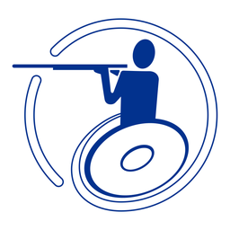

← Retour
Para-tir
Les épreuves
Treize épreuves au programme des Jeux paralympiques : neuf à la carabine (R1 à R9) et quatre au pistolet (P1 à P4). Une page par épreuve, avec le même plan que sur tous les sites MonTirSportif.
Les pages
Toutes les épreuves
Carabine 10 m

171R1 · Carabine 10 m debout, hommes Paralympique · SH1La carabine 10 m debout, SH1 hommes.Ma feuille de match172R2 · Carabine 10 m debout, femmes Paralympique · SH1La carabine 10 m debout, SH1 femmes.Ma feuille de match
173R3 · Carabine 10 m couché, mixte Paralympique · SH1La carabine 10 m couché, SH1 mixte.Ma feuille de match
Carabine 50 m
Pistolet
En un coup d’œil
Tableau récapitulatif
| Code | N° | Épreuve | Classe | Distance | Coups | Durée du match |
|---|---|---|---|---|---|---|
| R1 | 171 | Carabine 10 m debout, hommes | SH1 | 10 m | 60 coups | 1 h 15 sur cibles électroniques ; 1 h 30 sur cibles papier |
| R2 | 172 | Carabine 10 m debout, femmes | SH1 | 10 m | 60 coups | 1 h 15 sur cibles électroniques ; 1 h 30 sur cibles papier |
| R3 | 173 | Carabine 10 m couché, mixte | SH1 | 10 m | 60 coups | 50 min sur cibles électroniques ; 1 h sur cibles papier |
| R4 | 174 | Carabine 10 m debout, mixte | SH2 | 10 m | 60 coups | 1 h 15 sur cibles électroniques ; 1 h 30 sur cibles papier |
| R5 | 175 | Carabine 10 m couché, mixte | SH2 | 10 m | 60 coups | 1 h sur cibles électroniques ; 1 h 10 sur cibles papier |
| R6 | 571 | Carabine 50 m couché, mixte | SH1 | 50 m | 60 coups | 50 min sur cibles électroniques ; 1 h sur cibles papier |
| R7 | 572 | Carabine 50 m 3 positions, hommes | SH1 | 50 m | 3 × 40 coups | 2 h 45 sur cibles électroniques ; 3 h 15 sur cibles papier |
| R8 | 573 | Carabine 50 m 3 positions, femmes | SH1 | 50 m | 3 × 40 coups | 2 h 45 sur cibles électroniques ; 3 h 15 sur cibles papier |
| R9 | 574 | Carabine 50 m couché, mixte | SH2 | 50 m | 60 coups | 1 h sur cibles électroniques ; 1 h 10 sur cibles papier |
| P1 | 181 | Pistolet 10 m, hommes | SH1 | 10 m | 60 coups | 1 h 15 sur cibles électroniques ; 1 h 30 sur cibles papier |
| P2 | 182 | Pistolet 10 m, femmes | SH1 | 10 m | 60 coups | 1 h 15 sur cibles électroniques ; 1 h 30 sur cibles papier |
| P3 | 271 | Pistolet 25 m, mixte | SH1 | 25 m | 60 coups | Selon la compétition |
| P4 | 272 | Pistolet 50 m, mixte | SH1 | 50 m | 60 coups | 1 h 30 sur cibles électroniques ; 1 h 45 sur cibles papier |
Et aussi
Et aussi, en France
- P5 pistolet 10 m standard et F5 pistolet 10 m vitesse (SH1).
- R10 et R11 (VIS et VIP) : carabine 10 m debout et couché pour les déficients visuels, avec viseur sonore.
- F10 pistolet 25 m standard (SH1), F11 percussion centrale (SH1) et carabine 50 m 3x40 (SH2).
- F7 carabine 10 m couché et F13 carabine 50 m couché (classification française).
- Le para-trap aux plateaux (PT1, PT2, PT3) et l’arbalète field 18 m SH1.
- Les jeunes : le para-tir à l’école de tir ↗.
Les codes et la liste des épreuves évoluent avec les règlements : le règlement de gestion sportive de la FFTir et le règlement WSPS font foi.
Références